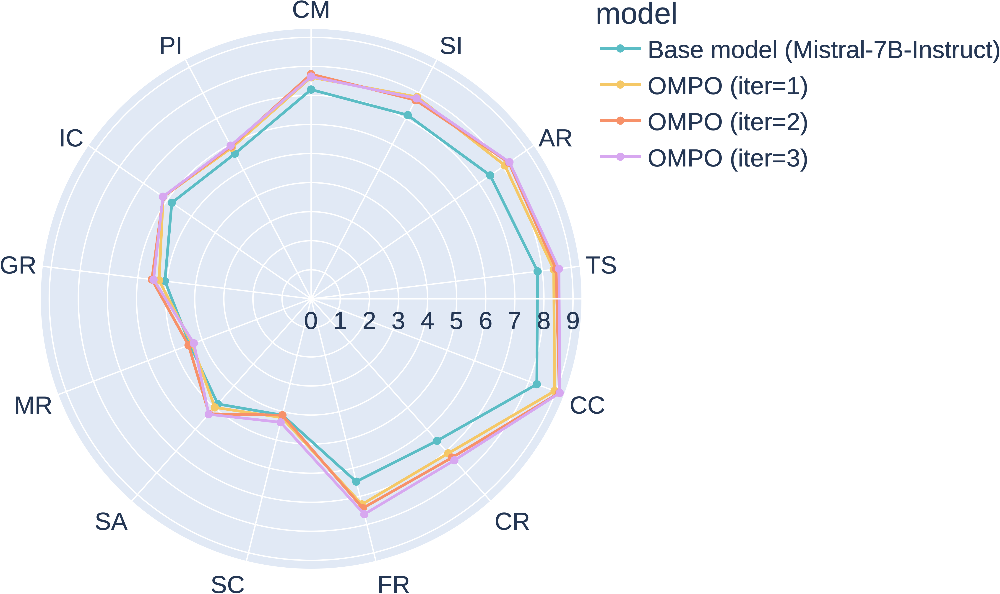
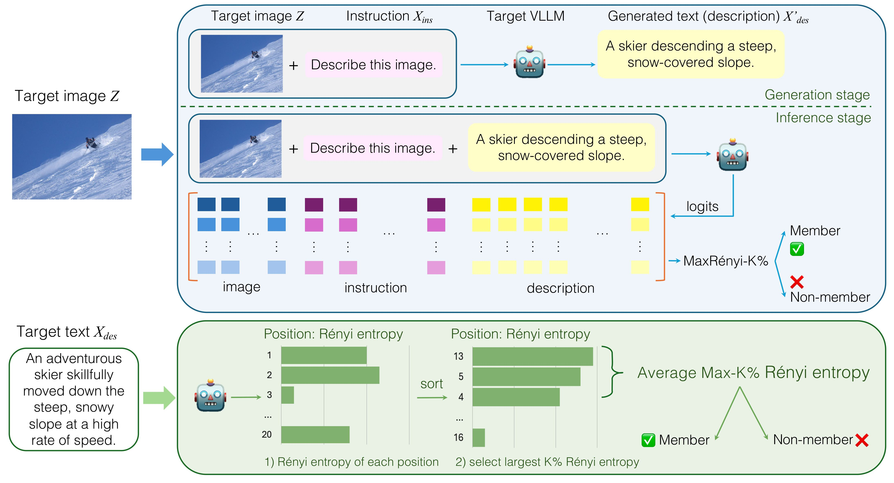
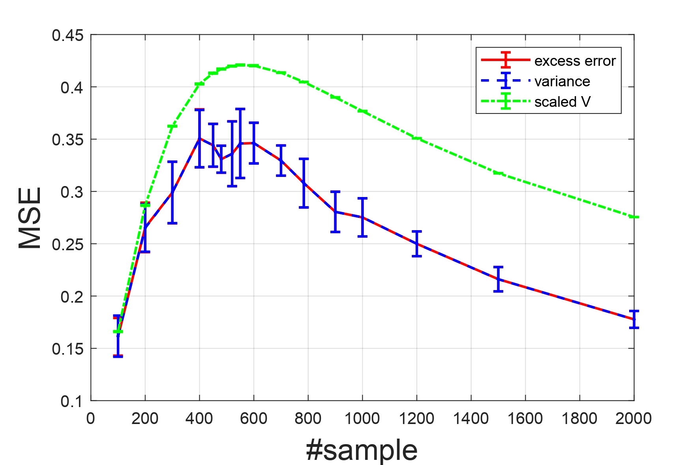
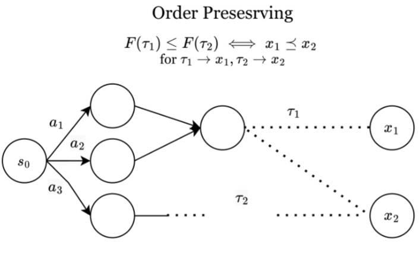
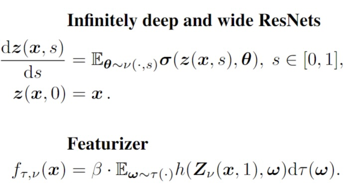
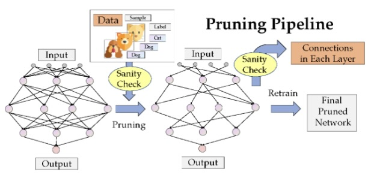

Research
I have a broad interest in large language models and other generative models. Currently, my current research mainly focus on:
- LLM Safety: Jailbreaking, Membership Inference Attacks.
- LLM Alignment: Preference Optimization, Parameter-Efficient Finetuning
- Sampling: MCMC, Generative Flow Networks.
|
What's New?
- [May 19, 2025] I am honored to be one of the ootable reviewers of ICLR 2025.
- [Nov 3, 2024] I am honored to be one of the top reviewers of NeurIPS 2024.
- [Oct 28, 2024] Our work on the multi-step preference optimization is accepted to be the oral presentation on Language Gamification Workshop @ NeurIPS 2024.
- [Oct 11, 2024] I am honored to receive the NeurIPS 2024 Scholar Award with financial assistance.
- [Sept 25, 2024] Our work on the privacy of large language models is accepted by NeurIPS 2024.
- [Sept 23, 2024] I start my PhD at UCLA.
|
Publications
* indicates equal contribution
|
|

|
Multi-Step Alignment as Markov Games: An Optimistic Online Gradient Descent Approach with Convergence Guarantees
Yongtao Wu*, Luca Viano*, Yihang Chen, Zhenyu Zhu, Kimon Antonakopoulos, Quanquan Gu, Volkan Cevher
Under review. Abridged in Language Gamification Workshop @ NeurIPS, Spotlight, 2024
[arxiv] / [workshop] / [workshop poster]
We model the multi-step preference alignment problem as a two-player constant-sum Markov game. We propose the MPO, a natural actor-critic algorithm; and the OMPO, an optimistic online
gradient descent algorithm.
|
|

|
Membership Inference Attacks against Large Vision-Language Models
Zhan Li*, Yongtao Wu*, Yihang Chen*, Francesco Tonin, Elias Abad Rocamora, Volkan Cevher
38th Annual Conference on Neural Information Processing Systems (NeurIPS), 2024
[arxiv] / [code] / [poster]
We introduce the first membership inference attack (MIA) benchmark for vision language models.
We also propose the first cross-model MIA pipeline with a new MIA metric.
|
|

|
High-Dimensional Kernel Methods under Covariate Shift: Data-Dependent Implicit Regularization
Yihang Chen, Fanghui Liu, Taiji Suzuki, Volkan Cevher
41st International Conference on Machine Learning (ICML), 2024
[arxiv] / [poster]
We study kernel ridge regression in high dimensions under covariate shifts and analyzes the role of importance re-weighting.
We also provide asymptotic expansion of kernel functions/vectors under covariate shift.
|
|

|
Order-Preserving GFlowNets
Yihang Chen, Lukas Mauch
12th International Conference on Learning Representations (ICLR), 2024
[arxiv] / [code] / [poster] / [slides]
We propose Order-Preserving GFlowNets (OP-GFNs), which sample composite objects
given only the (partial) order. We extend GFlowNets to preference-based optimization in single and multi-objective sampling.
|
|

|
Generalization of Scaled
Deep ResNets in the Mean-Field Regime
Yihang Chen, Fanghui Liu, Yiping Lu, Grigorios Chrysos, Volkan
Cevher
12th International Conference on Learning Representations (ICLR), Spotlight, 2024
[arxiv] / [poster] / [slides]
We provide the upper bound of the parameter distribution moving and
generalization error on the 0-1 classification task of the
infinitely deep and wide ResNets.
|
|

|
Sanity-Checking Pruning Methods: Random Tickets can Win the Jackpot
Jingtong Su*, Yihang Chen*, Tianle Cai*, Tianhao Wu, Ruiqi Gao,
Liwei Wang, Jason D. Lee.
34th Annual Conference on Neural Information Processing Systems
(NeurIPS), 2020
[arxiv] / [code]
/ [slides]
We sanity-check prune-at-init methods, and find them hardly exploits any information from the training data.
We propose "zero-shot" pruning, which only relies on simple data-independent pruning ratios for each layer.
|
Honors and Awards
|
ICLR 2025 Notable Reviewers, 2025.
NeurIPS 2024 Scholar Award & Top Reviewers, 2024.
Research Scholars MSc Program, EPFL, 2021-2022.
The Elite Undergraduate Training Program of Applied Math, 2019-2021.
Excellent Graduate of Peking University, 2021.
National Scholarship, People's Republic of China (Top 1%), 2020.
Shing Tung Yau Mathematics Awards, Chia Chiao Lin Medals, Bronze, 2020.
|
Invited Talks
|
Mila GFlowNet meeting, Order-Preserving GFlowNets, 2023.10.04.
|
Services
|
Conference Reviewers: NeurIPS 2024, ICLR 2025, AISTATS 2025, ICML 2025, NeurIPS 2025 (upcoming).
|
Fun Facts
|
During my stay in Switzerland, I finished the Via Alpina hiking.
|
Last Updated: May 20th, 2025. Website template from Jon Barron.
|
|
{kind=link}